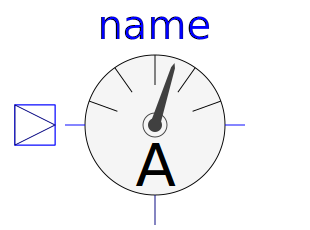

This package contains potential, voltage, and current sensors. The sensors can be used to convert voltages or currents into real signal values o be connected to components of the Blocks package. The sensors are designed in such a way that they do not influence the electrical behavior.
| Name | Description |
|---|---|
| Sensor to measure the potential | |
| Sensor to measure the voltage between two pins | |
|  CurrentSensor | Sensor to measure the current in a branch |
| Sensor to measure the power | |
| Sensor to measure current, voltage and power |
Copyright © 1998-2020, Modelica Association and contributors